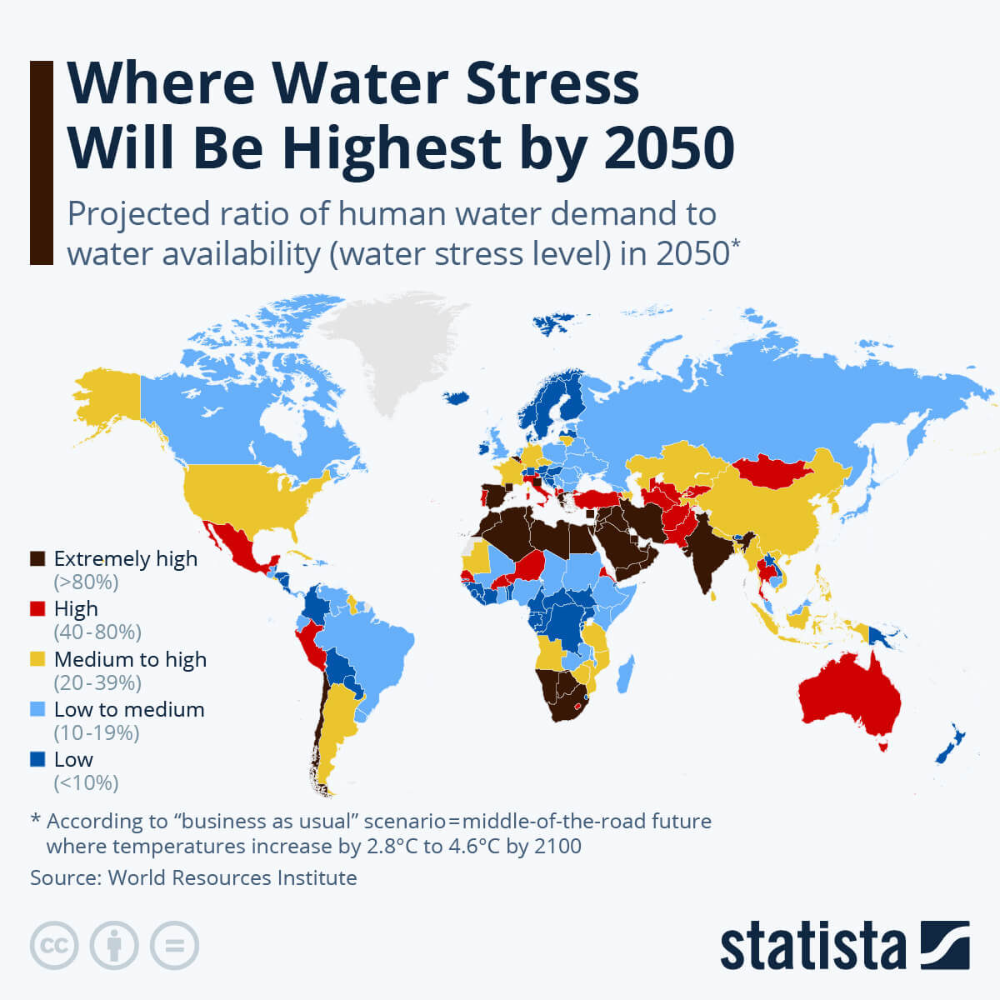
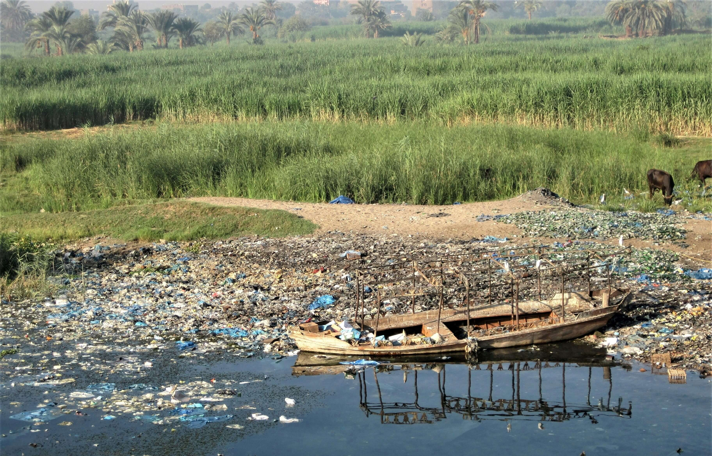
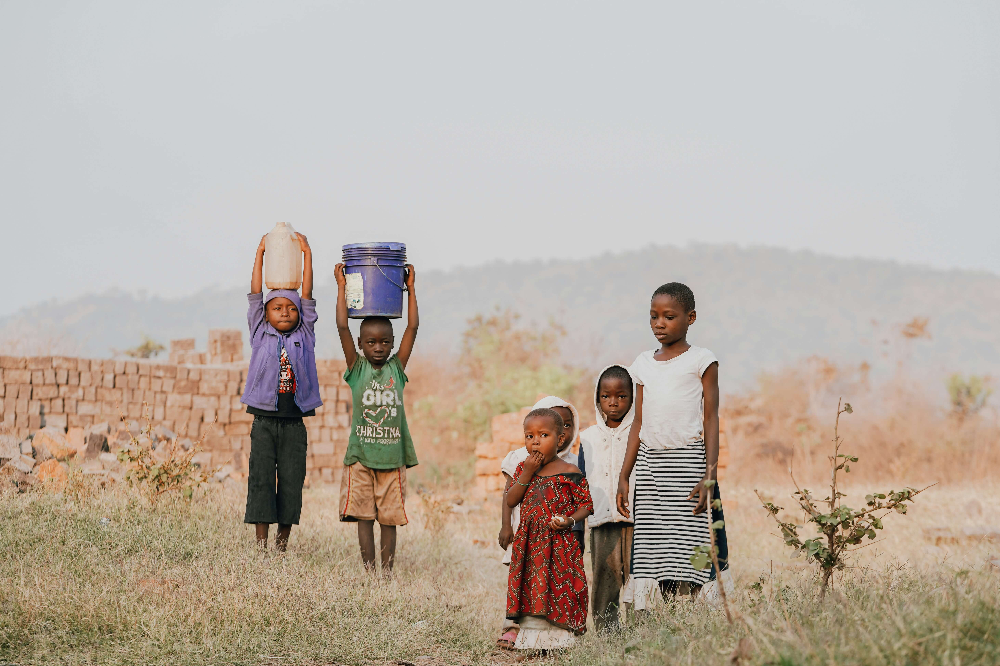
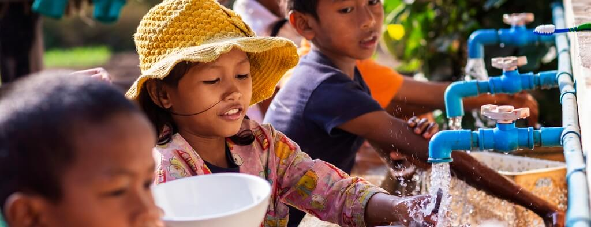

Global Water Crisis Statistics
The global water crisis is one of the most serious challenges facing humanity today. According to global reports, billions of people lack access to clean and safe drinking water. This issue is directly connected to Sustainable Development Goal 6, which aims to ensure availability and sustainable management of water and sanitation for all.
Around 2 billion people worldwide do not have access to safely managed drinking water services. Additionally, millions of people suffer from waterborne diseases due to contaminated water.

Root Causes of Water Crisis
1. Climate Change
Climate change is one of the leading drivers of the global water crisis. Rising global temperatures disrupt natural weather patterns, causing irregular rainfall, prolonged droughts, and extreme weather events such as floods and storms. In many regions, freshwater sources such as rivers, lakes, and glaciers are shrinking or disappearing. This reduces the availability of safe drinking water and affects agriculture, food production, and ecosystems that depend on stable water supplies.
2. Pollution
Water pollution significantly reduces the amount of usable freshwater. Industrial waste, agricultural runoff containing pesticides and fertilizers, and untreated sewage are often discharged directly into rivers and lakes. These pollutants contaminate water sources, making them unsafe for drinking, bathing, and farming. In many developing countries, lack of proper waste management systems worsens the problem, increasing the spread of waterborne diseases and harming aquatic life.
3. Overpopulation
Rapid population growth and urbanization increase the demand for water for drinking, sanitation, agriculture, and industry. As cities expand, water infrastructure often struggles to keep up with growing needs, leading to shortages and unequal distribution. Overpopulation also results in the over-extraction of groundwater, causing depletion of natural reserves and long-term water scarcity.
4. Agricultural Overuse
Agriculture is the largest consumer of freshwater globally, accounting for nearly 70% of water usage. Inefficient irrigation methods and water-intensive crops lead to significant wastage. In many regions, excessive use of water for farming depletes rivers and underground aquifers, leaving less water available for human consumption and environmental sustainability.
5. Poor Water Management
Ineffective management of water resources, including lack of proper infrastructure, weak policies, and poor planning, contributes greatly to the crisis. Leaking pipelines, outdated systems, and unequal distribution mean that even available water is often wasted or inaccessible to those who need it most.

Impact on Society
The lack of clean and safe water has serious consequences on human health, education, and economic development. In many parts of the world, especially in rural and low-income communities, people must travel long distances every day to collect water. This task is often carried out by women and children, limiting their opportunities for education and employment. As a result, the cycle of poverty continues, preventing communities from improving their living conditions.
Health is one of the most affected areas. Without access to clean water and proper sanitation, people are exposed to dangerous waterborne diseases such as cholera, diarrhea, typhoid, and dysentery. These illnesses spread quickly in areas with poor hygiene and contaminated water sources, leading to millions of deaths each year, especially among young children. Lack of clean water also makes it difficult to maintain basic hygiene practices such as handwashing, increasing the spread of infections.
Education is also heavily impacted. Children, particularly girls, are often forced to miss school to help their families collect water or due to illness caused by unsafe water. Schools in water-scarce regions may lack proper sanitation facilities, making it difficult for students to attend regularly. This leads to lower literacy rates and fewer opportunities for future success.
Economically, water scarcity slows down development. Industries, agriculture, and businesses rely heavily on water, and shortages can reduce productivity and income. Farmers may struggle to grow crops, leading to food shortages and higher prices. This affects not only local communities but also national economies.
Additionally, water scarcity can lead to social conflicts and displacement. Communities may compete over limited water resources, and in extreme cases, people are forced to migrate in search of better living conditions. This increases pressure on urban areas and can lead to overcrowding and further resource strain.

Possible Solutions
1. Water Conservation
Using water efficiently and reducing wastage can significantly help conserve water resources. Simple actions such as fixing leaks, using water-saving appliances, and avoiding unnecessary water use can make a big difference. On a larger scale, industries and agriculture can adopt efficient irrigation systems like drip irrigation to minimize water loss.
2. Sustainable Management
Governments and organizations must implement strong policies for sustainable water usage and protection. This includes investing in modern water infrastructure, protecting natural water sources, and ensuring fair distribution of water. Proper management also involves recycling wastewater and promoting long-term planning to prevent future shortages.
3. Education and Awareness
Educating communities about water conservation, sanitation, and hygiene practices can greatly improve water management. Awareness programs in schools and communities help people understand the importance of clean water and encourage responsible usage. Small behavioral changes at the individual level can collectively create a significant positive impact.
4. Technology and Innovation
Modern technologies such as water purification systems, desalination, and rainwater harvesting provide effective solutions to water scarcity. These innovations can help supply clean drinking water in areas where natural sources are limited. Investing in new technologies can improve efficiency and ensure sustainable access to water for future generations.

References
- World Health Organization (WHO) & UNICEF (2023) Progress on household drinking water, sanitation and hygiene 2000–2022. Available at: https://www.unicef.org/reports/progress-drinking-water-sanitation-hygiene-2023
- United Nations (2023) The Sustainable Development Goals Report 2023. Available at: https://unstats.un.org/sdgs/report/2023/
- UN-Water (2023) Summary Progress Update 2023: SDG 6. Available at: https://www.unwater.org/publications/summary-progress-update-2023
- United Nations Environment Programme (UNEP) (2021) From Pollution to Solution. Available at: https://www.unep.org/resources/report/pollution-solution-global-assessment-marine-litter-and-plastic-pollution
- Centers for Disease Control and Prevention (CDC) (2022) Global Water, Sanitation, & Hygiene (WASH). Available at: https://www.cdc.gov/healthywater/global/index.html
- United Nations Development Programme (UNDP) (2022) Water and Sustainable Development. Available at: https://www.undp.org
- Images from:https://unsplash.com/
GEN AI
- I used generative AI to improve grammar and organize the content into a clear and meaningful structure.